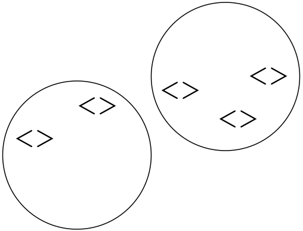

@timruffles
timr.co
ngjavascript
d3.selectAll(".bars")
.style("background",function(dataForElement,indexOfData) {
return dataForElement.alert ? "red" : "green";
});
(data,...) {(...,index) {javascript
function(data,index) {
// return value from data + index
}
javascript
d3.select("#root")
.selectAll("h3")
.text(function(d) {
return d.title;
});
data()javascript
// make a selection, then call data()
d3.selectAll("h3")
.data([
{title: "jQuery"},
{title: "D3"}
])
// now data can be related one-to-one with elements
ƒ(d,i) { return d.id }{ return index }{ return index }render(elements0, data1) // elements1
render(elements1, data1) // elements1</p>
<p>render(elements1, data2) // elements2</p>
<p>render(elements2, data1) // elements1
ng view concerns live in?<directives>Not <div class='profile'>, but <profile>
<bar-chart>html</p>
<p><bar-chart
series="ctrl.series"
y-scale="ctrl.yScale"
>
</bar-chart>
<components><components> won't share their DOM
html</p>
<p><svg
bar-chart='{
data: ctrl.data,
}'</p>
<p> line-graph='{
data: ctrl.data,
}'
>
</svg>
html</p>
<p><svg bar-chart line-graph>
<g class='some-data'>
</g>
</svg>